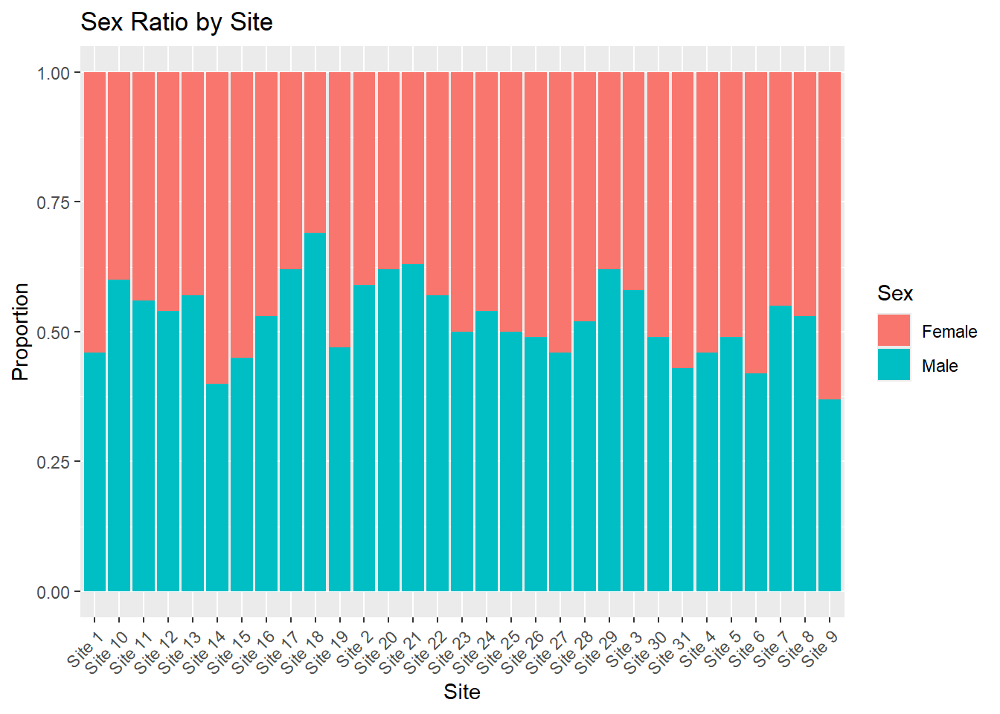
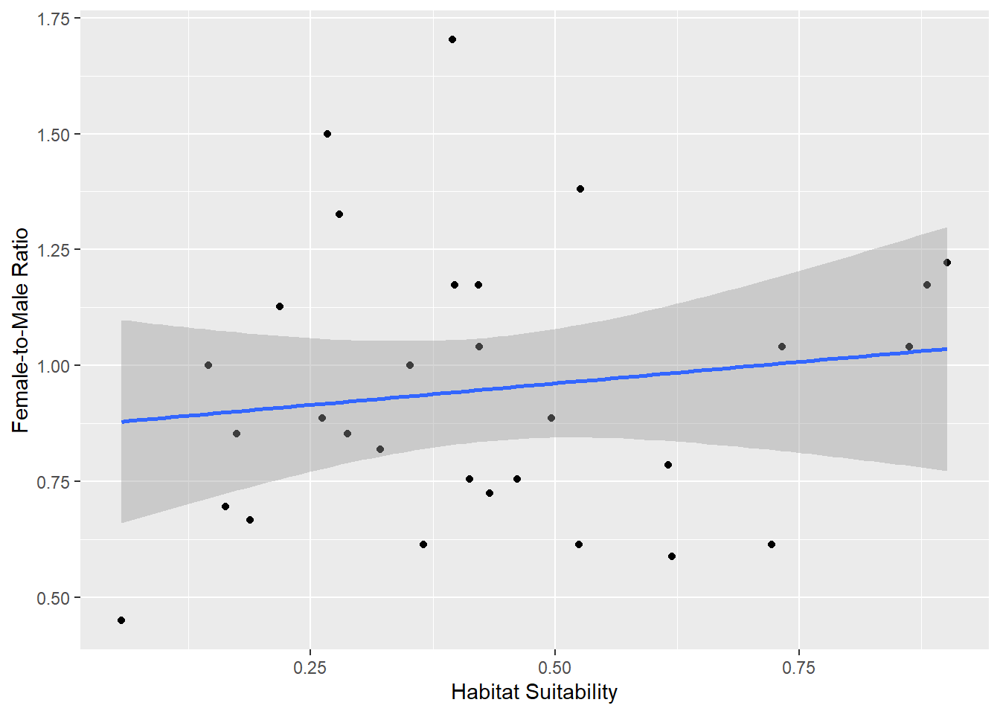
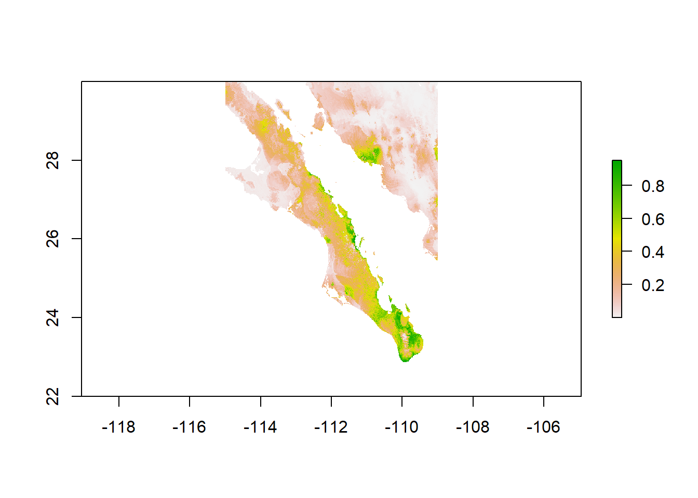

── Attaching core tidyverse packages ──────────────────────── tidyverse 2.0.0 ──
✔ dplyr 1.1.4 ✔ readr 2.1.5
✔ forcats 1.0.0 ✔ stringr 1.5.1
✔ ggplot2 3.5.1 ✔ tibble 3.2.1
✔ lubridate 1.9.3 ✔ tidyr 1.3.1
✔ purrr 1.0.2
── Conflicts ────────────────────────────────────────── tidyverse_conflicts() ──
✖ dplyr::filter() masks stats::filter()
✖ dplyr::lag() masks stats::lag()
ℹ Use the conflicted package (<http://conflicted.r-lib.org/>) to force all conflicts to become errors
Loading required package: sp
Attaching package: 'raster'
The following object is masked from 'package:dplyr':
select
Linking to GEOS 3.12.1, GDAL 3.8.4, PROJ 9.3.1; sf_use_s2() is TRUENowak 543 Final
Rows: 31 Columns: 3
── Column specification ────────────────────────────────────────────────────────
Delimiter: ","
chr (1): Site
dbl (2): Latitude, Longitude
ℹ Use `spec()` to retrieve the full column specification for this data.
ℹ Specify the column types or set `show_col_types = FALSE` to quiet this message.
Rows: 3100 Columns: 6
── Column specification ────────────────────────────────────────────────────────
Delimiter: ","
chr (2): Site, Sex
dbl (4): Plant, Individual, PhenotypeA, PhenotypeB
ℹ Use `spec()` to retrieve the full column specification for this data.
ℹ Specify the column types or set `show_col_types = FALSE` to quiet this message.
# A tibble: 31 × 4
Site Female_Count Male_Count Female_to_Male_Ratio
<chr> <int> <int> <dbl>
1 Site 1 54 46 1.17
2 Site 10 40 60 0.667
3 Site 11 44 56 0.786
4 Site 12 46 54 0.852
5 Site 13 43 57 0.754
6 Site 14 60 40 1.5
7 Site 15 55 45 1.22
8 Site 16 47 53 0.887
9 Site 17 38 62 0.613
10 Site 18 31 69 0.449
# ℹ 21 more rows
Pearson's Chi-squared test
data: table(samples$Sex, samples$Site)
X-squared = 68.382, df = 30, p-value = 7.968e-05# A tibble: 12 × 4
Site Female_Count Male_Count Female_to_Male_Ratio
<chr> <int> <int> <dbl>
1 Site 1 54 46 1.17
2 Site 14 60 40 1.5
3 Site 15 55 45 1.22
4 Site 19 53 47 1.13
5 Site 26 51 49 1.04
6 Site 27 54 46 1.17
7 Site 30 51 49 1.04
8 Site 31 57 43 1.33
9 Site 4 54 46 1.17
10 Site 5 51 49 1.04
11 Site 6 58 42 1.38
12 Site 9 63 37 1.70# A tibble: 17 × 4
Site Female_Count Male_Count Female_to_Male_Ratio
<chr> <int> <int> <dbl>
1 Site 10 40 60 0.667
2 Site 11 44 56 0.786
3 Site 12 46 54 0.852
4 Site 13 43 57 0.754
5 Site 16 47 53 0.887
6 Site 17 38 62 0.613
7 Site 18 31 69 0.449
8 Site 2 41 59 0.695
9 Site 20 38 62 0.613
10 Site 21 37 63 0.587
11 Site 22 43 57 0.754
12 Site 24 46 54 0.852
13 Site 28 48 52 0.923
14 Site 29 38 62 0.613
15 Site 3 42 58 0.724
16 Site 7 45 55 0.818
17 Site 8 47 53 0.887 [1] FALSE FALSE FALSE FALSE FALSE FALSE FALSE FALSE FALSE FALSE FALSE FALSE
[13] FALSE FALSE FALSE FALSE FALSE FALSE FALSE FALSE FALSE FALSE FALSE FALSE
[25] FALSE FALSE FALSE FALSE FALSE FALSE FALSE Site Female_to_Male_Ratio Habitat_Suitability
1 Site 1 1.1739130 0.8810290
2 Site 10 0.6666667 0.1879650
3 Site 11 0.7857143 0.6163620
4 Site 12 0.8518519 0.2876230
5 Site 13 0.7543860 0.4613570
6 Site 14 1.5000000 0.2673030
7 Site 15 1.2222222 0.9018780
8 Site 16 0.8867925 0.4964650
9 Site 17 0.6129032 0.5242670
10 Site 18 0.4492754 0.0562845
11 Site 19 1.1276596 0.2185940
12 Site 2 0.6949153 0.1627240
13 Site 20 0.6129032 0.3651910
14 Site 21 0.5873016 0.6195190
15 Site 22 0.7543860 0.4125120
16 Site 23 1.0000000 0.3519050
17 Site 24 0.8518519 0.1744380
18 Site 25 1.0000000 0.1455230
19 Site 26 1.0408163 0.8625610
20 Site 27 1.1739130 0.4214400
21 Site 28 0.9230769 NA
22 Site 29 0.6129032 0.7217000
23 Site 3 0.7241379 0.4328730
24 Site 30 1.0408163 0.4226090
25 Site 31 1.3255814 0.2791050
26 Site 4 1.1739130 0.3975000
27 Site 5 1.0408163 0.7324870
28 Site 6 1.3809524 0.5264130
29 Site 7 0.8181818 0.3210530
30 Site 8 0.8867925 0.2617900
31 Site 9 1.7027027 0.3953470`geom_smooth()` using formula = 'y ~ x'
[1] NA
Call:
lm(formula = Female_to_Male_Ratio ~ habitat_suitability, data = locations_df)
Residuals:
Min 1Q Median 3Q Max
-0.42970 -0.20286 -0.03974 0.17497 0.76070
Coefficients:
Estimate Std. Error t value Pr(>|t|)
(Intercept) 0.8685 0.1193 7.281 6.31e-08 ***
habitat_suitability 0.1859 0.2466 0.754 0.457
---
Signif. codes: 0 '***' 0.001 '**' 0.01 '*' 0.05 '.' 0.1 ' ' 1
Residual standard error: 0.2987 on 28 degrees of freedom
(1 observation deleted due to missingness)
Multiple R-squared: 0.01988, Adjusted R-squared: -0.01512
F-statistic: 0.568 on 1 and 28 DF, p-value: 0.4573
Call:
lm(formula = Female_to_Male_Ratio ~ habitat_suitability * PhenotypeA *
PhenotypeB, data = samples)
Residuals:
Min 1Q Median 3Q Max
-0.55004 -0.19214 -0.04008 0.16561 0.76289
Coefficients:
Estimate Std. Error t value Pr(>|t|)
(Intercept) -0.23512 0.09352 -2.514 0.012
habitat_suitability 2.70995 0.20662 13.116 < 2e-16
PhenotypeA 0.34650 0.04237 8.178 4.23e-16
PhenotypeB 0.42678 0.03869 11.031 < 2e-16
habitat_suitability:PhenotypeA -0.81481 0.09150 -8.905 < 2e-16
habitat_suitability:PhenotypeB -0.93534 0.08614 -10.858 < 2e-16
PhenotypeA:PhenotypeB -0.11917 0.01708 -6.979 3.65e-12
habitat_suitability:PhenotypeA:PhenotypeB 0.27156 0.03702 7.336 2.82e-13
(Intercept) *
habitat_suitability ***
PhenotypeA ***
PhenotypeB ***
habitat_suitability:PhenotypeA ***
habitat_suitability:PhenotypeB ***
PhenotypeA:PhenotypeB ***
habitat_suitability:PhenotypeA:PhenotypeB ***
---
Signif. codes: 0 '***' 0.001 '**' 0.01 '*' 0.05 '.' 0.1 ' ' 1
Residual standard error: 0.2738 on 2992 degrees of freedom
(100 observations deleted due to missingness)
Multiple R-squared: 0.1199, Adjusted R-squared: 0.1178
F-statistic: 58.23 on 7 and 2992 DF, p-value: < 2.2e-16
Habitat_Suitability Glacier difference
1 0.8810290 0.9227720 -0.041742980
2 0.1879650 0.1890130 -0.001047999
3 0.6163620 0.6118770 0.004484951
4 0.2876230 0.2251980 0.062424988
5 0.4613570 0.3898320 0.071525007
6 0.2673030 0.5051860 -0.237883031
7 0.9018780 0.9347510 -0.032872975
8 0.4964650 0.4916560 0.004808992
9 0.5242670 0.3556450 0.168622017
10 0.0562845 0.0541657 0.002118800
11 0.2185940 0.1673550 0.051238999
12 0.1627240 0.4716300 -0.308906004
13 0.3651910 0.3316630 0.033528000
14 0.6195190 0.6867450 -0.067225993
15 0.4125120 0.4853990 -0.072887003
16 0.3519050 0.2463260 0.105578989
17 0.1744380 0.3211760 -0.146737993
18 0.1455230 0.4471890 -0.301666006
19 0.8625610 0.7814810 0.081079960
20 0.4214400 0.3992860 0.022154003
21 NA 0.7124060 NA
22 0.7217000 0.7615080 -0.039807975
23 0.4328730 0.4039260 0.028946996
24 0.4226090 0.7239640 -0.301354975
25 0.2791050 0.3565710 -0.077465981
26 0.3975000 0.3218530 0.075646996
27 0.7324870 0.7211120 0.011375010
28 0.5264130 0.4898480 0.036565036
29 0.3210530 0.2485630 0.072489992
30 0.2617900 0.3431230 -0.081332982
31 0.3953470 0.3444950 0.050852001[1] -0.02758304